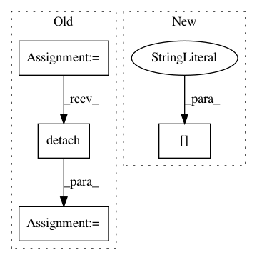

f93beff338925cc1bf1b3ff1b32a2c440a4c9427,tests/_tests_scripts/z_mvp_mnist_gan.py,CustomRunner,_handle_batch,#CustomRunner#Any#,18
Before Change
// fake
generated_labels_ = torch.zeros(bs, 1).to(self.device)
generated_pred_ = self.model["discriminator"](
generated_images.detach()
)
fake_loss = F.binary_cross_entropy(generated_pred_, generated_labels_)
// loss
loss_discriminator = (real_loss + fake_loss) / 2.0
self.state.batch_metrics["loss_discriminator"] = loss_discriminator
def main():
After Change
// Train the generator
generated_images = self.model["generator"](random_latent_vectors)
predictions = self.model["discriminator"](generated_images)
batch_metrics["loss_generator"] = F.binary_cross_entropy_with_logits(
predictions, misleading_labels
)
In pattern: SUPERPATTERN
Frequency: 3
Non-data size: 4
Instances
Project Name: catalyst-team/catalyst
Commit Name: f93beff338925cc1bf1b3ff1b32a2c440a4c9427
Time: 2020-04-21
Author: scitator@gmail.com
File Name: tests/_tests_scripts/z_mvp_mnist_gan.py
Class Name: CustomRunner
Method Name: _handle_batch
Project Name: maciejkula/spotlight
Commit Name: bed4f2dd50ff54eb7629362c3d03a3b758e0745a
Time: 2017-08-09
Author: maciej.kula@gmail.com
File Name: spotlight/layers.py
Class Name: BloomEmbedding
Method Name: forward
Project Name: OpenNMT/OpenNMT-py
Commit Name: e7d0f85e965deddd217aaa64728637173f1491d1
Time: 2017-06-14
Author: srush@seas.harvard.edu
File Name: onmt/Models.py
Class Name: Decoder
Method Name: forward